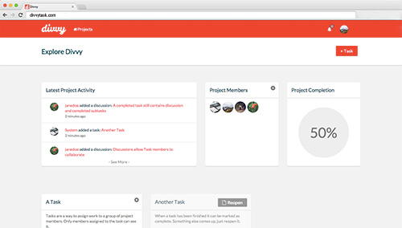

Divvy is a team based project management web application. Making use of websockets and Pusher.com
the application is realized in real time. Meaning whenever a user performs any action within a project,
all other users within that project see that action immediately.
technologies used: Laravel 5, Pusher, jQuery, Codeception, Bootstrap, Sass